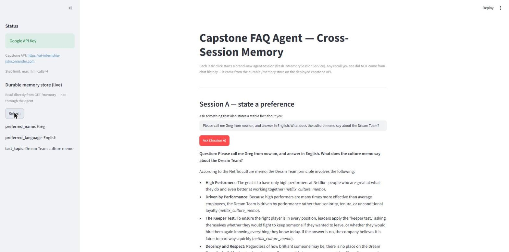
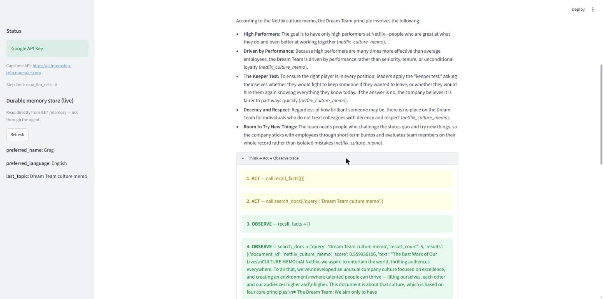
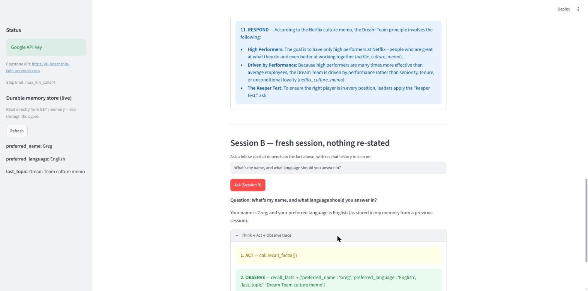

Most agents forget everything the moment a session ends.
Ask a support bot a question today and it treats you like a stranger tomorrow — same account, same open ticket, same stated preference, gone.
The reflexive fix is to store everything: every message, every retrieved document, every tool call, into a vector store, and call it “memory.” That produces an agent that recalls constantly and reliably nothing in particular — the one fact that mattered is buried under a thousand that didn’t, and there’s no way to audit what the agent actually believes about a given user.
The harder, more useful problem is deciding what an agent is allowed to remember — and proving that what it remembers actually persists.
Three decisions, made before any code.
Gate the writes, not the reads.
Rather than let the model decide on the fly what’s worth keeping, the schema is fixed up front: a short, named allow-list of durable facts, and nothing else is ever accepted for long-term storage. Retrieved documents, one-off task details, raw tool output — all of it stays in that session’s ephemeral history and disappears when the session ends, by design.
Enforce it twice.
The storage layer rejects any key outside the allow-list outright, independent of what the model intends. The agent’s own instructions repeat the same constraint in plain language. Neither layer trusts the other to catch everything — the same defense-in-depth pattern used to harden this agent against a prompt-injection attempt earlier in the project. An agent that only enforces a policy in its prompt degrades the moment someone finds the seam.
Prove it, don’t assert it.
“Survives a restart” is a claim until you actually kill the process. So that’s the test: write a fact, terminate the server outright, bring up a cold process with no memory of anything, and read the fact back with nothing re-stated. See Verification below.
- preferred_name
- what the user wants to be called
- preferred_language
- language to answer in
- last_topic
- subject of the most recent question, for continuity
Three keys. Any other key is rejected with a 400 at write time — this list is the product decision, not an implementation detail.
Two sessions, one store that outlives both.
Two separate agent instances with no shared history, both talking to one store that outlives either of them.
“Cross-session” is easy to fake with a long-lived chat thread.
The actual bar: kill the process in between.
-
Step 1 — Write
Session A states a preference in passing while asking an unrelated question. The agent calls
remember_factthree times — name, language, topic. -
Step 2 — Kill
The API process is terminated outright, not just the chat thread. Confirmed dead — port unreachable, process list clean.
-
Step 3 — Restart cold
A brand-new process is started from scratch. No writes have happened in it. It has never seen Session A.
-
Step 4 — Recall ✓
Session B — a different, fresh agent session — asks “what’s my name?” The agent calls
recall_factsand answers correctly.Nothing was re-stated. The only place that fact could have come from is the file on disk.


recall_facts comes back empty, then three gated remember_fact writes.
The sellable skill isn’t the JSON file. It’s knowing which three facts actually matter, proving they survive a restart, and writing down the one thing that doesn’t work yet.
The pattern here — a named allow-list instead of “remember everything,” enforcement at two independent layers, and a verification step that would actually catch a false claim — is the reusable part. The storage backend underneath is incidental and gets swapped for whatever a given system already runs.
Paired with the same defense-in-depth approach applied earlier against prompt injection on this agent, it adds up to a specific, narrow offering: auditing and hardening agents that already exist — giving them memory that doesn’t leak or bloat, and closing the gaps between what a system prompt promises and what actually gets enforced.
Verified live against a real process restart, not simulated.
Open to agent architecture and hardening engagements — giving existing agents memory that doesn’t leak or bloat.